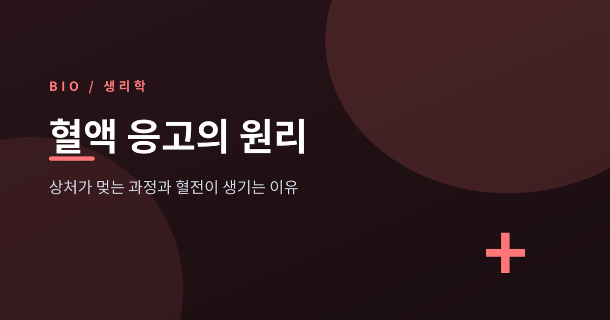
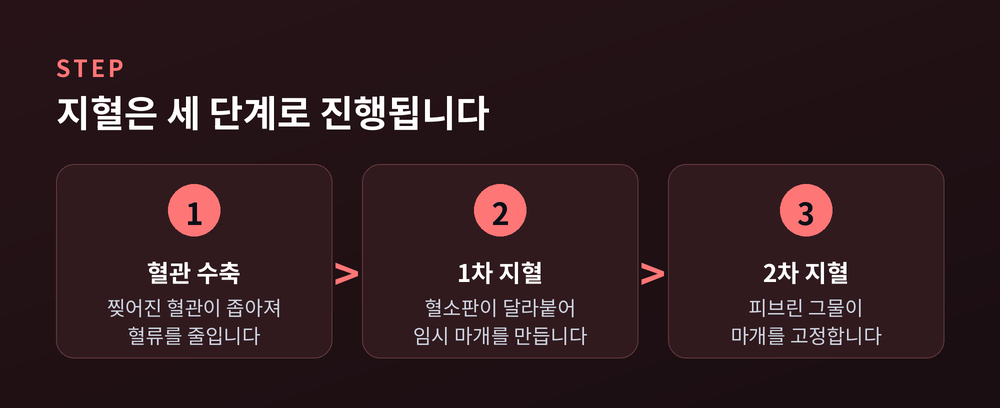
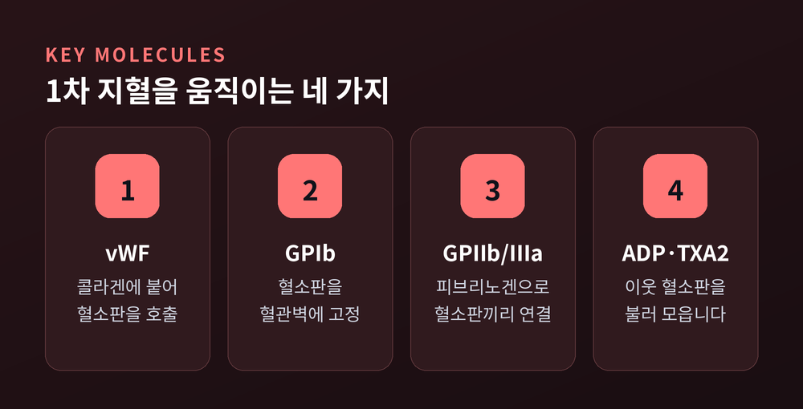
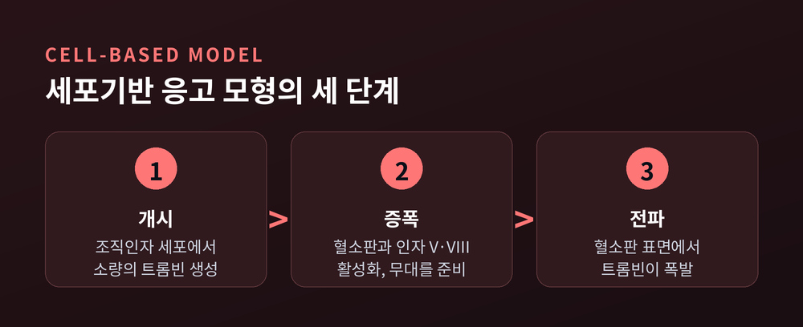
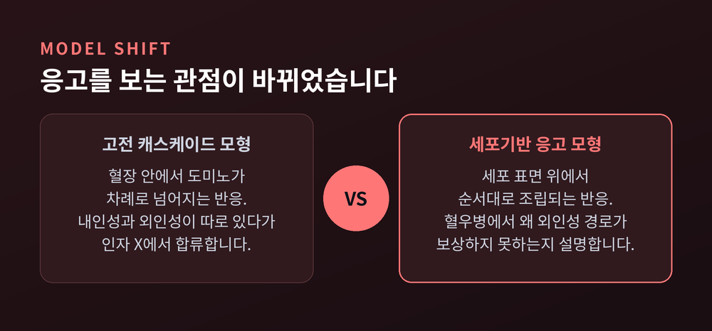
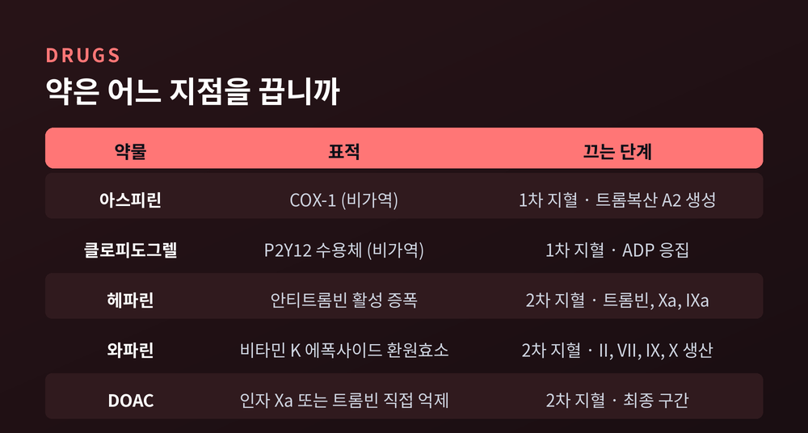

혈액 응고의 원리, 상처가 멎는 과정과 혈전이 생기는 이유

이번 글에서는 혈액 응고의 원리를 처음부터 끝까지 정리해 보겠습니다. 손끝을 베였을 때 피가 저절로 멎는 과정과, 똑같은 장치가 혈관 안에서 잘못 작동해 혈전이 되는 이유를 함께 다룹니다.
먼저 세 줄로 요약합니다.
- 지혈은 혈관 수축, 혈소판 마개, 피브린 그물의 세 단계로 진행됩니다.
- 요즘 생리학은 응고를 혈장 속 도미노가 아니라 세포 표면 위에서 조립되는 반응으로 봅니다.
- 몸은 응고와 동시에 브레이크도 밟습니다. 이 균형이 한쪽으로 기울 때 출혈이나 혈전이 생깁니다.
피가 멎는 데는 세 개의 층이 있습니다
혈관이 찢어지면 몸은 세 가지 일을 거의 동시에 시작합니다.
첫째, 찢어진 혈관이 스스로 좁아집니다. 혈류를 줄여 손실을 늦추는 조치입니다.
둘째, 혈소판이 상처 부위에 달라붙어 임시 마개를 만듭니다. 이것을 1차 지혈이라고 부릅니다.
셋째, 응고 인자들이 연쇄 반응을 일으켜 피브린이라는 단백질 그물을 짭니다. 이 그물이 임시 마개를 단단히 고정합니다. 이것이 2차 지혈입니다.
여기서 놓치기 쉬운 사실이 하나 있습니다. 혈액은 혈관 안에서 늘 액체 상태를 유지합니다. 응고 체계와 항응고 체계가 항상 맞물려 균형을 이루고 있기 때문입니다. 응고는 "켜기"만 있는 장치가 아닙니다.

1차 지혈 — 혈소판은 어떻게 벽에 달라붙습니까
혈소판은 혈액 1마이크로리터당 약 15만에서 45만 개가 떠다닙니다. 수명은 7일에서 10일 정도로 짧습니다. 자료에 따라 정상 상한을 40만으로 잡기도 하니, 폭이 있는 수치로 받아들이시면 좋겠습니다.
이 혈소판을 상처 자리에 붙여주는 접착제가 폰빌레브란트 인자입니다. 혈관내피세포와 거핵구가 만들며, 유전자는 12번 염색체에 있습니다.
구조가 흥미롭습니다. 처음에는 2,813개 아미노산짜리 전구체로 만들어졌다가, 앞부분이 잘려나가 2,050개 아미노산의 성숙형이 됩니다. 그리고 소단위가 2개에서 60개 이상까지 이어붙어 긴 다량체를 이룹니다. 길수록 결합 자리가 많아 지혈에 유리합니다.
작동 순서는 이렇습니다.
혈관이 찢어지면 내피 아래 콜라겐이 드러납니다. 폰빌레브란트 인자가 여기에 달라붙습니다. 그 상태로 빠른 혈류의 전단응력을 받으면 A2 도메인이 기계 스위치처럼 펴집니다. 그러면 숨어 있던 A1 도메인이 드러나고, 혈소판 표면의 GPIb 수용체가 여기에 붙습니다.
붙는 것과 뭉치는 것은 다른 일입니다. 역할이 나뉘어 있습니다.
- GPIb — 폰빌레브란트 인자를 잡고 혈소판을 벽에 고정합니다. 혈류가 빠른 동맥에서 특히 중요합니다.
- GPIIb/IIIa — 활성화된 뒤 피브리노겐을 다리 삼아 혈소판끼리 이어 붙입니다.
벽에 붙은 혈소판은 가만히 있지 않습니다. 모양을 바꾸고 세포골격을 재배열한 뒤, 치밀과립에서 ADP와 세로토닌을 쏟아냅니다. 동시에 아라키돈산을 트롬복산 A2로 바꿔 내보냅니다.
ADP는 P2Y12 수용체를 통해 이웃 혈소판을 불러 모읍니다. 트롬복산 A2는 응집을 돕는 동시에 혈관 평활근을 수축시킵니다. 하나가 활성화되면 열이 모여드는 구조입니다.

2차 지혈 — 트롬빈이 폭발하는 순간
교과서에 실린 응고 캐스케이드 그림을 보신 적이 있을 겁니다. 왼쪽에 내인성 경로, 오른쪽에 외인성 경로가 있고, 인자 X에서 만나 공통 경로로 합쳐지는 그림입니다.
내인성 경로는 노출된 콜라겐이 인자 XII를 활성화하며 시작됩니다. XII가 XI을, XI이 IX를, IX가 X을 차례로 깨웁니다. 길고 느립니다.
외인성 경로는 훨씬 짧습니다. 손상된 내피세포가 조직인자를 내놓고, 조직인자가 인자 VII을 활성화하고, VIIa가 곧바로 X을 활성화합니다.
공통 경로에서 Xa는 인자 V를 보조인자로 삼아 프로트롬빈을 트롬빈으로 바꿉니다. 트롬빈이 피브리노겐을 잘라 피브린 가닥을 만듭니다. 마지막으로 인자 XIII가 칼슘과 함께 그 가닥들을 서로 가교해 그물망으로 굳힙니다.
응고 인자 대부분은 비활성 전구체인 지모겐으로 떠다니다가 세린 프로테아제로 활성화됩니다. 다만 V와 VIII은 보조인자이고, XIII는 가교 효소라 이 분류에 들어가지 않습니다. 이들 대부분은 간에서 만들어집니다. 그중 인자 VII의 반감기가 가장 짧아, 간이 나빠지면 PT가 가장 먼저 길어집니다.
그런데 이 그림은 이미 낡았습니다
예전에는 응고를 혈장 안에서 도미노가 넘어지듯 진행되는 반응으로 설명했습니다. 지금은 세포 표면 위에서 순서대로 조립되는 반응으로 봅니다.
바뀐 이유는 교과서 모형이 실제 환자를 설명하지 못했기 때문입니다.
인자 XII가 결핍되면 aPTT는 길어집니다. 그런데 출혈은 거의 없습니다. 반대로 혈우병 환자는 외인성 경로가 멀쩡한데도 심하게 출혈합니다. 두 경로가 정말 독립적이라면 성한 쪽이 보상해 주어야 마땅합니다. 실제로는 그렇지 않았습니다.
그래서 나온 것이 세포기반 응고 모형입니다. 응고를 세 단계로 봅니다.
개시는 조직인자를 가진 세포 표면에서 일어납니다. 조직인자와 VIIa 복합체가 인자 IX와 X을 깨우고, 아주 적은 양의 트롬빈이 만들어집니다.
증폭은 그 소량의 트롬빈이 하는 일입니다. 혈소판을 활성화하고, 인자 V와 VIII과 XI을 활성형으로 바꿉니다. 무대를 차리는 단계입니다.
전파는 활성화된 혈소판 표면에서 벌어집니다. 테나제와 프로트롬비나제 복합체가 조립되고, 트롬빈이 폭발적으로 쏟아집니다.

혈우병이 왜 위험한지 이 모형이 깔끔하게 설명합니다. 개시 단계는 정상이지만, 증폭과 전파가 인자 VIII이나 IX에 의존하기 때문입니다. 불씨는 붙는데 불길이 번지지 않는 셈입니다.
물론 이 모형도 완결된 답은 아닙니다. 2023년에는 응고를 선천면역·염증 반응과 떼어놓을 수 없다고 보는 수렴 모형이 제안됐습니다. 인자 XII가 주도하는 접촉계가 응고뿐 아니라 브라디키닌을 만드는 경로도 함께 켠다는 관찰이 근거입니다.

몸은 브레이크도 함께 밟습니다
응고가 시작되는 순간, 몸은 동시에 제동을 겁니다. 그러지 않으면 온몸의 혈관이 막힐 것입니다.
브레이크는 크게 셋입니다.
안티트롬빈은 트롬빈 자체를 억제하고, IXa와 Xa, XIa, XIIa의 활성도 함께 떨어뜨립니다.
단백질 C와 S는 더 영리합니다. 트롬빈이 내피세포의 트롬보모듈린과 결합하면, 이 복합체가 단백질 C를 활성화합니다. 활성화된 단백질 C는 단백질 S의 도움을 받아 인자 Va와 VIIIa를 무력화합니다. 트롬빈이 스스로 자기 브레이크를 켜는 구조입니다.
TFPI는 개시 단계를 직접 끕니다. 인자 Xa와, 조직인자·VIIa 복합체를 함께 억제합니다.
이 브레이크가 고장 나면 곧바로 혈전 위험이 됩니다. 인자 V 라이덴 변이가 대표적입니다. 활성화된 단백질 C가 인자 V를 잘라내지 못하게 만드는 변이인데요. 그러면 인자 V가 계속 하류를 자극합니다. 네덜란드 라이덴에서 처음 발견돼 붙은 이름입니다.
상처가 아물면 그물도 걷어내야 합니다. 그 일은 플라스민이 맡습니다.
플라스미노겐과 tPA가 피브린 위에서 만나야만 플라스민이 만들어집니다. 용해가 필요한 자리에서만 켜지는 안전장치입니다. 이때 가교된 피브린이 잘려 나오면서 생기는 조각이 D-다이머입니다.
다만 D-다이머 상승은 "어딘가에서 피브린이 만들어졌다가 분해됐다"는 신호일 뿐입니다. 감염이나 수술, 임신에서도 오릅니다. 이 수치 하나로 혈전을 단정할 수는 없습니다.
검사지의 PT와 aPTT는 무엇을 봅니까
건강검진 결과지에서 익숙한 두 항목입니다. 보는 곳이 다릅니다.
| 검사 | 대략의 정상 범위 | 보는 경로 |
|---|---|---|
| PT | 약 11~13.5초 | 외인성 + 공통 경로 |
| INR | 약 0.8~1.2 (정상 약 1.0) | PT를 표준화한 값 |
| aPTT | 약 25~35초 | 내인성 + 공통 경로 |
INR은 검사실마다 다른 시약 차이를 보정한 표준화 값입니다. 그래서 병원을 옮겨도 같은 잣대로 비교할 수 있습니다.
한계도 분명합니다. 인자 XIII 결핍은 PT와 aPTT가 모두 정상으로 나옵니다. 가교 단계는 이 검사들이 아예 측정하지 않기 때문입니다. 검사가 정상이라고 지혈이 완전하다는 뜻은 아닙니다.
균형이 무너지면 어느 쪽으로든 갑니다
출혈 쪽으로 기운 대표적인 예가 혈우병입니다.
혈우병 A는 인자 VIII 결핍, 혈우병 B는 인자 IX 결핍입니다. 둘 다 X 염색체 연관 열성으로 유전됩니다. 미국 질병통제예방센터 추정으로 남성 10만 명당 혈우병 A가 12명, 혈우병 B가 3.7명입니다. 전 세계 기준으로는 남성 5,000명당 1명, 2만 5,000명당 1명 수준으로 보고됩니다.
가장 흔한 유전성 출혈질환은 따로 있습니다. 폰빌레브란트병입니다. 선별하지 않은 인구의 약 1퍼센트로 추정되며, 인구 기반 유전 연구에서도 0.8~1.6퍼센트로 나왔습니다. 다만 임상적으로 문제가 되는 경우는 100만 명당 약 125명 수준입니다. 전체의 약 80퍼센트를 차지하는 1형은 가장 경증입니다.
반대쪽은 혈전입니다.
혈전이 생기는 조건을 정리한 것이 비르호 삼징입니다. 혈류 정체, 혈관 내피 손상, 과응고 상태. 세 가지입니다. 우리나라 질병관리청 자료도 심부정맥혈전증의 원인으로 같은 세 가지를 듭니다.
규모는 작지 않습니다. 미국에서는 매년 최대 90만 명이 심부정맥혈전증이나 폐색전증의 영향을 받고, 6만에서 10만 명이 사망하는 것으로 추정됩니다. 폐색전증 환자의 약 4분의 1은 첫 증상이 돌연사입니다. 다만 발생률 수치는 나라와 연구 방법에 따라 편차가 큽니다.
약은 어느 지점을 끕니까
응고 과정을 단계로 나눠 보면, 약들이 각각 어디를 겨냥하는지가 선명해집니다.
| 약물 | 표적 | 끄는 단계 |
|---|---|---|
| 아스피린 | COX-1 (비가역) | 1차 지혈 — 트롬복산 A2 생성 |
| 클로피도그렐 | P2Y12 수용체 (비가역) | 1차 지혈 — ADP 응집 |
| 헤파린 | 안티트롬빈 활성 증폭 | 2차 지혈 — 트롬빈·Xa·IXa |
| 와파린 | 비타민 K 에폭사이드 환원효소 | 2차 지혈 — II·VII·IX·X 생산 |
| DOAC | 인자 Xa 또는 트롬빈 직접 억제 | 2차 지혈 — 최종 구간 |
몇 가지만 덧붙이겠습니다.
아스피린이 하루 한 번 적은 용량으로 듣는 이유가 있습니다. COX 활성 부위의 세린 잔기를 비가역적으로 아세틸화하는데, 혈소판에는 핵이 없어 효소를 새로 만들지 못합니다. 한 번 꺼진 혈소판은 남은 수명 7~10일 내내 꺼진 상태로 남습니다.
헤파린은 스스로 응고를 막지 않습니다. 안티트롬빈에 붙어 그 활성을 증폭할 뿐입니다. 증폭 폭이 상당합니다. 헤파린이 있을 때 안티트롬빈의 트롬빈 억제 속도는 없을 때보다 3~4자릿수, 즉 1,000배 이상 빨라집니다.
와파린은 비타민 K를 재활용하는 효소를 막습니다. 그래서 간이 인자 II, VII, IX, X을 더 만들지 못합니다. 다만 비타민 K는 항응고 단백질인 단백질 C와 S에도 필요합니다. 와파린이 브레이크까지 함께 줄인다는 뜻입니다. 관리가 까다로운 이유가 여기 있습니다.
DOAC는 한 지점만 정확히 막습니다. 다비가트란은 트롬빈을, 리바록사반과 아픽사반은 인자 Xa를 가역적으로 억제합니다. 정기적인 INR 검사가 필요 없다는 점이 편리합니다. 그러나 신장으로 배설되기 때문에, 탈수나 신기능 저하가 겹치면 약물 농도가 올라가 출혈 위험이 커집니다. 검사가 필요 없다는 말이 관리가 필요 없다는 뜻은 아닙니다.

정리하면 이렇습니다.
지혈은 잘 짜인 연쇄 반응이 아니라, 켜는 힘과 끄는 힘이 매 순간 겨루는 상태입니다. 상처에서는 켜는 쪽이 잠깐 이기고, 혈관 안에서는 끄는 쪽이 늘 이깁니다. 혈전은 그 승부가 잘못된 자리에서 뒤집힌 결과입니다.
— 응고는 반응이 아니라 균형입니다.
베인 자리에서 피가 저절로 멎는 일이 대단해 보이지 않으신다면, 그 균형이 지금도 조용히 지켜지고 있다는 뜻일 것입니다.
이 글은 일반적인 생리학 설명이며, 진단이나 치료를 대신하지 않습니다. 멍이 자주 들거나 출혈이 잘 멎지 않는 경우, 한쪽 다리가 붓고 아픈 경우, 갑작스러운 호흡곤란이나 흉통이 있는 경우에는 스스로 판단하지 마시고 의료진과 상담하시길 권합니다. 복용 중인 항응고제나 항혈소판제를 임의로 중단하거나 조절하는 일도 삼가시는 편이 좋겠습니다.